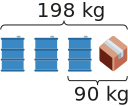

| Chapitre 14 | |
| Problèmes de valeurs inconnues | |
En mathématiques, pour résoudre des problèmes, il est souvent plus facile de représenter les informations sous forme de schéma. On utilise alors un dessin, un mot ou une lettre pour représenter les nombres que l'on ne connaît pas encore.
En sixième on utilise encore des symboles, par exemple : ⚽ + ⚽ = 34€
Cela permet de représenter le prix de deux ballons.
Pour résoudre des problèmes, on utilise principalement les schémas suivants. Il est aussi possible de choisir son propre schéma, mais il ne faut oublier aucune information.
Exemple 1 :
Cinq poires identiques pèsent 600 g.
On peut représenter cela par l'égalité : 🍐 + 🍐 + 🍐 + 🍐 + 🍐 = 600g.
On peut donc déterminer la masse d'une poire représentée par le symbole de poire dans ce calcul.
🍐 = 600 ÷ 5 = 120g. Une poire pèse 120g
Exemple 2 :
On dispose de carton et de baril identiques (de même masse). Voici deux pesées effectuées sur deux chargements différents.
🛢️ + 📦️ = 90 kg
🛢️ + 🛢️ + 🛢️ + 📦️ = 198 kg
Pour connaître la masse d'un carton et d'un baril, on peut effectuer les calculs suivants :

🛢️📦️ pèsent 90kg et 🛢️🛢️🛢️📦️ pèsent 198 kg. Donc 🛢️🛢️ pèsent 198 - 90 soit 108 kg.
Un baril pèse donc 108 ÷ 2 = 54 kg.
Un carton pèse donc 90 - 54 = 36 kg.
Exemple :
Pour déterminer le nombre de segment composant un motif de numéro élevé, on cherche une relation entre le numéro du motif et le nombre de segment qui le composent. Pour cela, on peut organiser les valeurs dans un tableau et observer l'évolution du nombre de segments.
| Motif | Nombre de segment | Calcul |
|---|---|---|
| 0 | 4 | = 4 + (3 × 0) |
| 1 | 7 | = 4 + (3 × 1) |
| 2 | 10 | = 4 + (3 × 2) |
| 3 | 13 | = 4 + (3 × 3) |
| 4 | 16 | = 4 + (3 × 4) |
| ... | ... | = 4 + (3 × ...) |
On obtient donc une formule permettant de trouver pour le motif 50, par exemple :
4 + (3 × 50) = 154 segments.
On utilise petit à petit des lettres. On note M le numéro du motif et la formule obtenu est 4 + (3 × M)